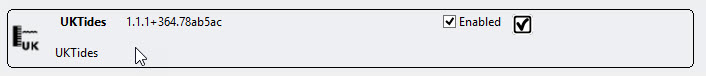
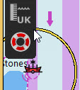
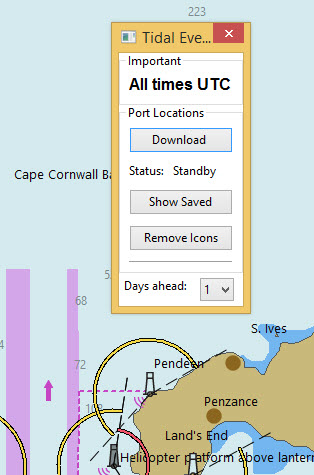
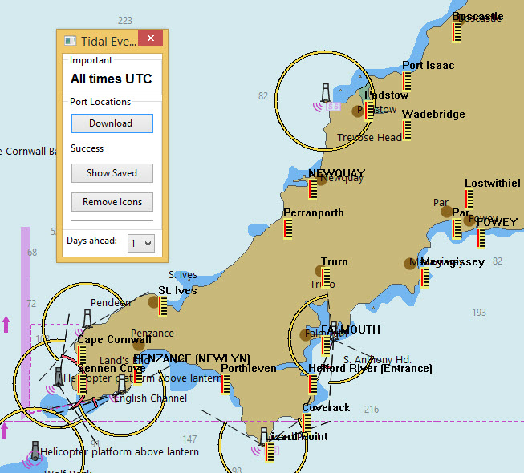
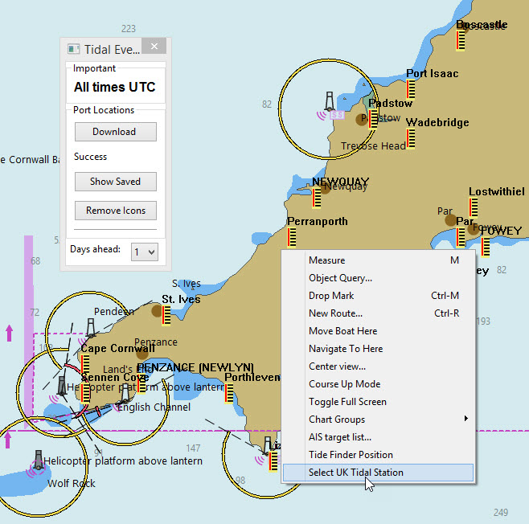
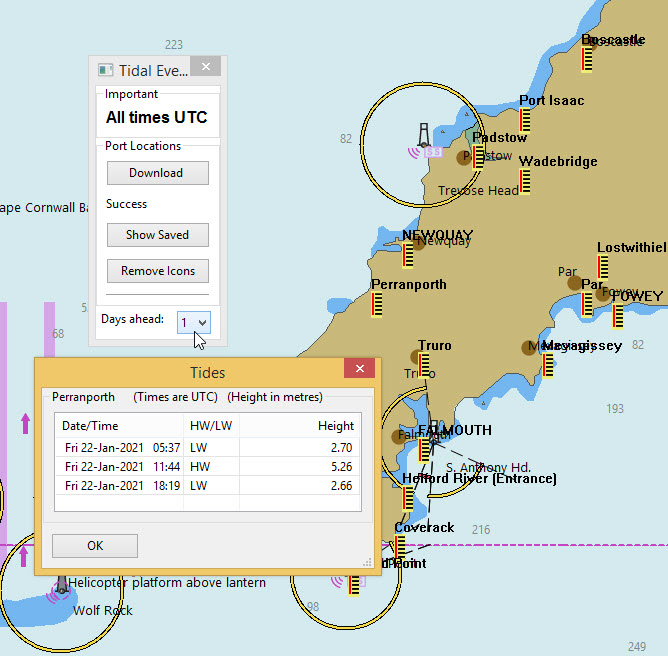
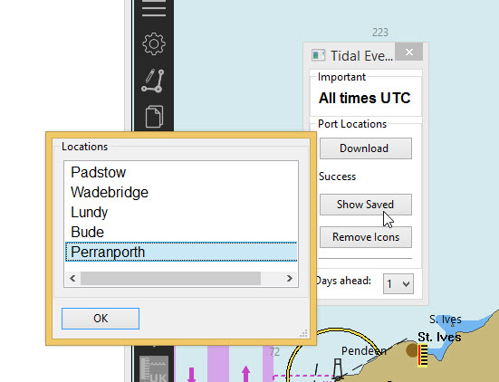
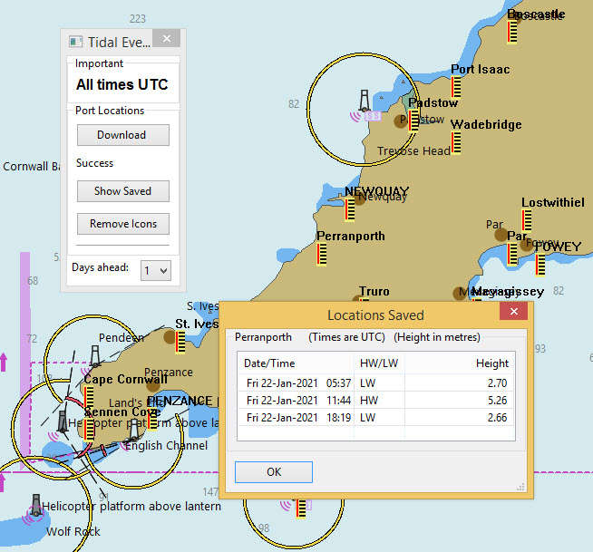
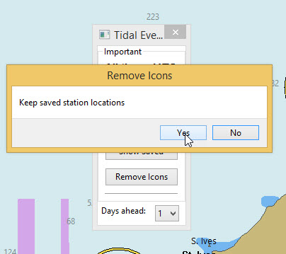
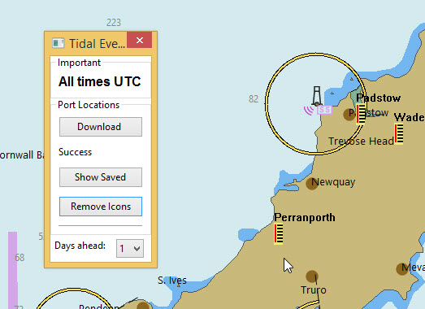

UKTides
Aim
Using the UKHO API predictions of HW/LW for over 600 tidal stations around the UK are possible.
This is the official UKHO data.
Requirements
OpenCPN 5.2.4 and above.
For the initial download an Internet connection is needed. It is possible to save up to 7 days of data and during this period no further connection is needed.1. What and Why
Official UK tidal predictions of HW/LW. Extends the number of tidal stations around the UK.
2. Install
The plugin is available in the Beta catalog of the plugin manager. After installation the UKTides plugin is added to the list and can be enabled.

Once enabled the icon for UKTides is shown in the toolbar:

3. Standard actions
Click on the UKTides icon.
The plugin dialog appears on the screen.

Click the 'Download' button to show all the UK tidal stations. These locations are downloaded using the UKHO API.

Right-click alongside the station icon where the times of HW/LW are needed.
On the menu is an option 'Select UK Tidal Station'.

Using this option an information box appears with the tidal data.

4. Options
The tidal data is saved for a period of up to 7 days. This is the maximum allowed by the UKHO license.
Using 'Saved Stations' you can see the stations you have worked with recently.One of these can be selected to see the data.


All the icons can be a distraction. They can be removed using the button 'Remove Icons'.

You can choose to leave the icons for the 'saved ports' still visible.
The selector at the bottom of the plugin dialog lets the user select the number of days for which predictions are produced.
